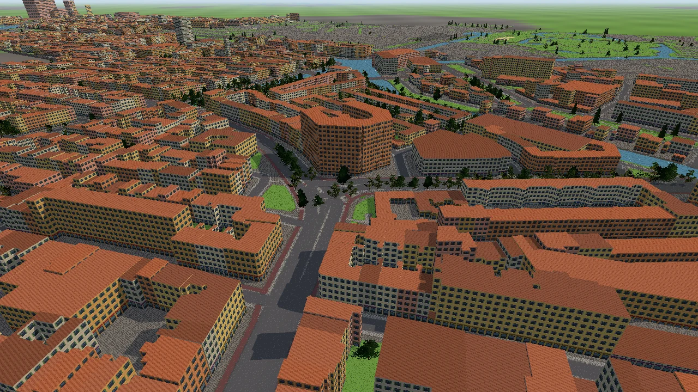
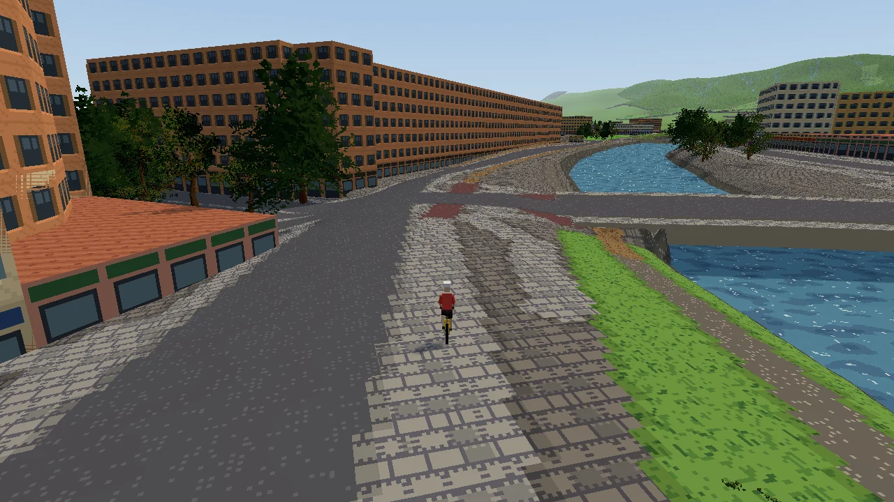
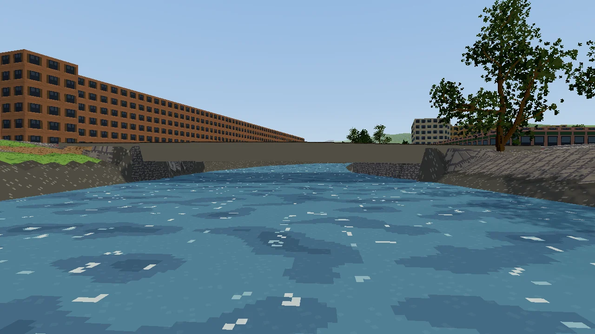
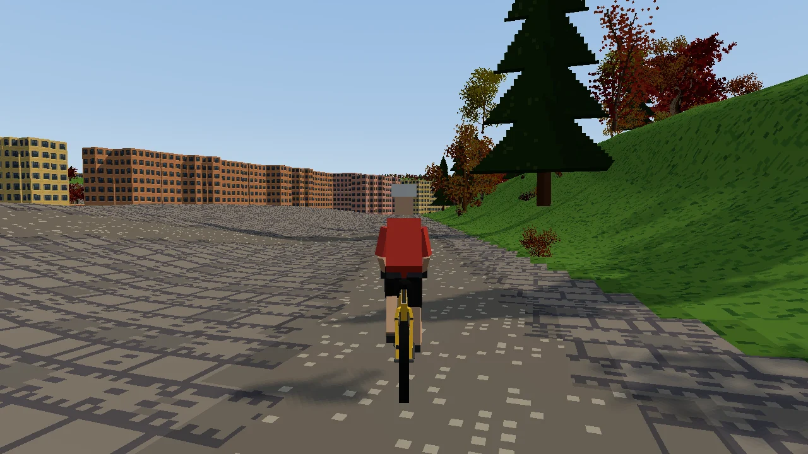
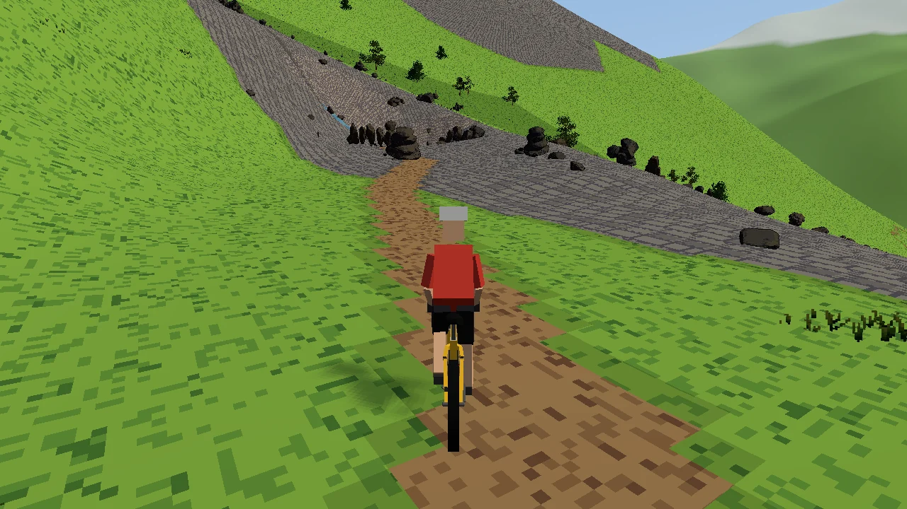
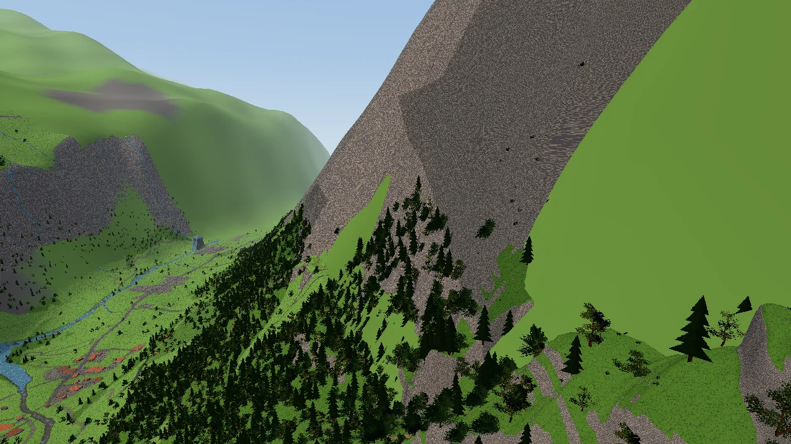
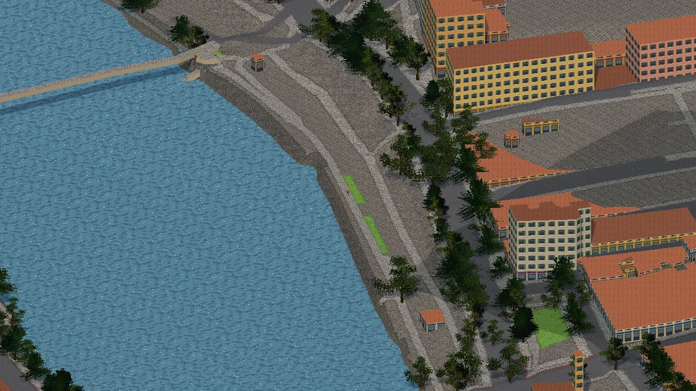

Real places, tiny
Every picture below is a real place, built automatically from a GPX file and open map data. Nothing was placed by hand.







How a route becomes a world
Bring a route
Any GPX file: a ride you recorded, a route you planned, a famous climb. Tracks and planned routes both work.
The world is built around it
Roads, paths, rivers, lakes, bridges, buildings and trees come from OpenStreetMap; hills from real elevation data; the weather from the area's climate. Full detail along the route, less further out, all the way to the horizon.
Ride it
On the keyboard or a controller, or on your bike trainer or walking pad. Climbs slow you down at the same watts, and the trainer feels the hill.
What's in it
Any route on Earth
Cities, coasts, forests and mountains, from anywhere OpenStreetMap covers. Routes that can't really be ridden, like a walk that heads out over the sea, are caught and flagged.
Weather from the real climate
Every route knows its area's temperature, rain, wind and daylight month by month, so a ride in Bergen in November feels different from Lyon in July.
Your trainer, your watts
Smart trainers and walking pads connect through OmniPlay. Your power drives real riding physics: gradient, road surface, air and wind. No trainer? The keyboard works just as well.
Looks you can swap
The whole look comes from asset packs: ground, trees, water, buildings, sky. Anyone can make one, and every route works with every pack.
Garry's Mod or standalone
Play it as a Garry's Mod gamemode with friends, or as its own game. One codebase, the same menus and the same routes in both.
Seasons
Summer greens, autumn colours and bare winter trees, with bushes, grass and rocks to match the time of year.
Where it's at
Working now
- The world builder: GPX in, a ready-to-ride world out, with automatic checks
- The default asset pack, with seasons and flowing water
- Riding physics and trainer support through OmniPlay
Next
- The in-game world renderer in Garry's Mod and the standalone game
- HUD, route picker and menus
- A starter set of real routes from around the world
- Rivals: AI riders who challenge you to beat them
- Free roam: pick any place and ride from A to B